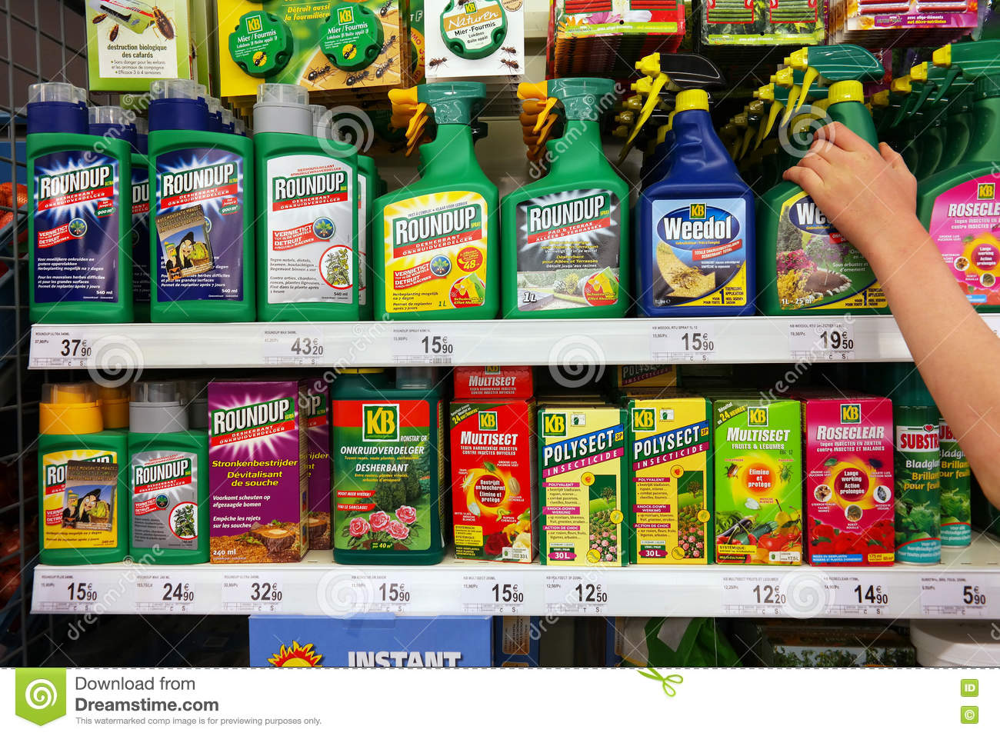

*Organic farming is an agricultural approach that advocates healthy products free from components that may harm humans and nature.
* They include but are not limited to industrial pesticides, insecticides, fertilizers, clones, GMOs, chemical medications, hormones, growth-boosters,etc....
*The basic idea of organic agriculture is to provide food with optimum nutritional value and minimum dangerous ingredients, with only permitted substances used.
*The principle also requires 100% natural forage for livestock and its further processing without synthetics.
* Organic farming practices involve care for field employees, and aim at maintaining the harmonious balance in the environment keeping it as alive and productive as possible.
The benefits of organic farming to mankind, biosphere communities, environment, and ag business in general explain its popularity in the recent 15 years. As early as in 2008, the volume of retail organic food in the US was estimated at $22.9 billion, according to the Ministry of food, agriculture and rural affairs in Canada. The agriculture approach has multiple advantages both to producers and consumers. However, it is far from perfect. The gains and challenges it introduces are enlisted below.
The concept and practices of organic agriculture have certain pluses:
*refused health-threatening chemicals;
*avoided costs for expensive synthetic additives;
*ensured food quality and certification;
*improved product taste and nutritional value;
*protected environment;
*recycled natural wastes for manure;
*boosted soil quality.
The drawbacks of organic agriculture include:
*reduced production volumes;
*increased farming labor and time consumption for manual and mechanical work, crop observation, and uncompromised compliance with standards;
*frequent pest and weed control instead of one-time chemical applications;
*shortened shelf-life (natural organic food usually spoils faster due to the absence of preservatives);
*higher prices of organic products vs conventional ones.
Organic agriculture supports the ecosystem balance and spares natural resources. This approach ensures the availability and productivity of lands in the future. It echoes with sustainable agriculture in this regard:
*improves the soil quality;
*reduces pollution with recycling and limitations of chemicals;
*enhances the ecosystem biodiversity;
*saves energy and resources, disapproves their excessive exploitation;
*applies non-chemical methods of pest and weed management
* provides natural conditions to support livestock needs and behavior.